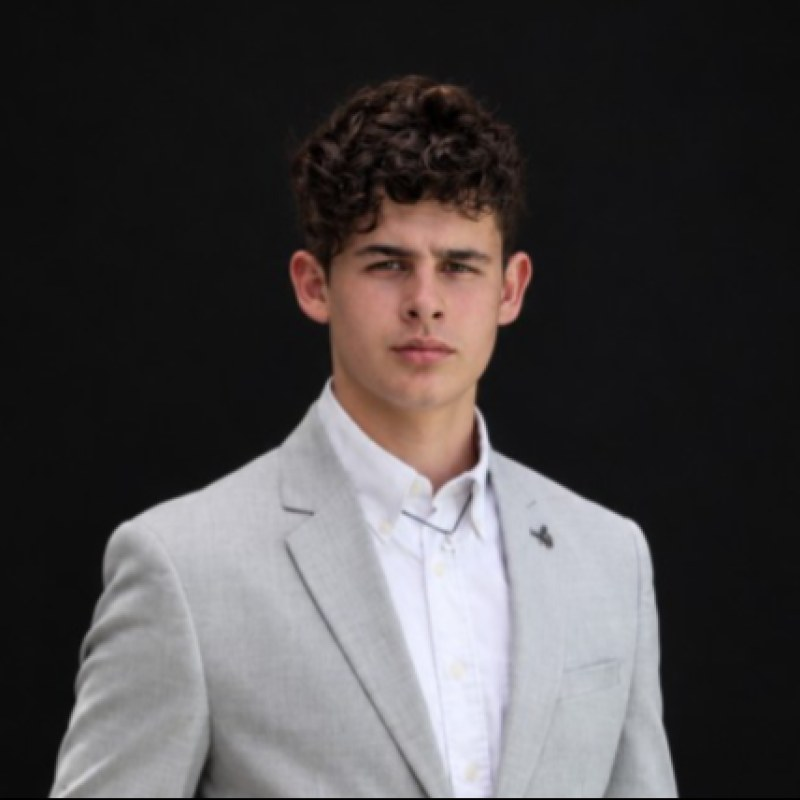

Contact
Louis ROMANA, fondateur et rédacteur en chef

Derrière le média
Louis Romana a fondé LSPACE MEDIA, un média d’actualités spatiales en français dont il présente les vidéos. Rédacteur en chef, il choisit les sujets, écrit les scripts et définit la direction artistique.
Il a grandi à Toulouse, au cœur de l’industrie aérospatiale européenne. Le premier décollage de la Falcon Heavy a nourri sa passion pour le secteur spatial et les nouvelles technologies, auxquels il consacre une veille active.
Étudiant en ingénierie à l’Elisa Aerospace engineering school.
Formation
- sept. 2026 – présentElisa Aerospace engineering school
- sept. 2024 – juin 2026CPGE PCSI/PSI*
- sept. 2023 – juin 2024Brevet d’initiation aéronautique (BIA) + option anglais
- sept. 2021 – juin 2024Bac Français International (BFI), anglais (UK)
- sept. 2020 – juin 2022IGCSE, Cambridge